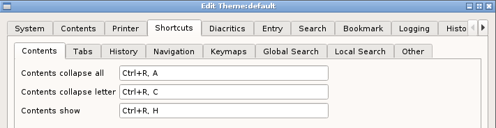

The shorcuts are grouped in a number of tabs. The table below lists the default shortcuts and provides a brief description where appropriate.

OSX users should make the usual substitution.
To set a shortcut, click on the item and press the required keys.
| Tab | Action | Key | Description |
|---|---|---|---|
| Contents | The panel of roots | ||
| Collapse all | Ctrl+R,A | Collapse | |
| Collapse letter | Ctrl+R,C | Collapse letter | |
| Show | Ctrl+R,H | Make the contents visible | |
| Tabs | |||
| Delete | Ctrl+T,D | ||
| Delete other tabs | Ctrl+T,O | ||
| Go tab | Ctrl+T <number> | Go to the nth tab | |
| List tabs | F2 | Show the list of tabs | |
| History | |||
| Back | Ctrl+H,B | ||
| Next | Ctrl+H,N | ||
| Clear | |||
| Enable | Ctrl+H,E | ||
| Disable | Ctrl+H,D | ||
| Navigation | Movement by root | ||
| First | Ctrl+N,F | ||
| Next | Ctrl+N,N | ||
| Previous | Ctrl+N,B | ||
| Last | Ctrl+N,L | ||
| Keymaps | |||
| Enable | Ctrl+K,E | ||
| Disable | Ctrl+K,D | ||
| Global search | Search the Lexicon | ||
| Root | Ctrl+S,R | ||
| Head | Ctrl+S,H | ||
| Word | Ctrl+S,W | ||
| Page | Ctrl+S,P | ||
| Node | Ctrl+S,N | ||
| Local search | Search the current page | ||
| Find | Ctrl+L,F | ||
| Find next | Ctrl+L,F | ||
| Show | Ctrl+L,S | Show last search results | |
| Clear | Ctrl+L,C | Clear last search results | |
| Other | |||
| Toggle interface | Ctrl+I | Toggle minimal interface | |
| Show logs | Ctrl+V,L | Show the log viewer | |
| Quit | Ctrl+Q | Exit the application | |
| Sync page | Ctrl+G,R | Align the page with the current contents | |
| Sync contents | Ctrl+G,L | Align the contents with the current page | |
| Show notes | Ctrl+N,S | Show the note browser | |
| Menu show | Ctrl+M,S | Show the menu | |
| Toggle link | Ctrl+L | Toggle the linking ofthe contents panel and the entry panel | |
| Options | Ctrl+O,P | Show the preferences dialog | |
| Focus contents | Ctrl+M,C | Give keyboard focus to the panel of roots | |
| Focus entry | Ctrl+M,E | Give keyboard focus to the contents panel | |
| Toggle allow duplicates | Ctrl+U | ||
| Bookmarks | |||
| Add | Ctrl+B, <boomkark id> | ||
| Input | Ctrl+B,Ctrl+A | Prompt for a bookmark name | |
| List | Ctrl+B,Ctrl+L | Show the bookmark list dialog | |
| Jump | Ctrl+J, <bookmark id> | Jump to the bookmark with the id | |
| Revert | Ctrl+B,Ctrl+R | Return from previous jump | |
| Clear | Ctrl+B,Ctrl+C | Clear bookmarks |
Note: shortcuts related to bookmarks are set here. They are listed here for completeness.
Note: when setting shortcuts do not use the sequences that has been setup as the bookmark add and jump prefixes i.e Ctrl+B and Ctrl+J in the above example.
Since the shortcuts are saved in the configuration file it is possible to set them manually by editing the file. When doing this always wrap the text in quotes, like this:
Options="Ctrl+O,P"
Not like this:
Options=Ctrl+O,P